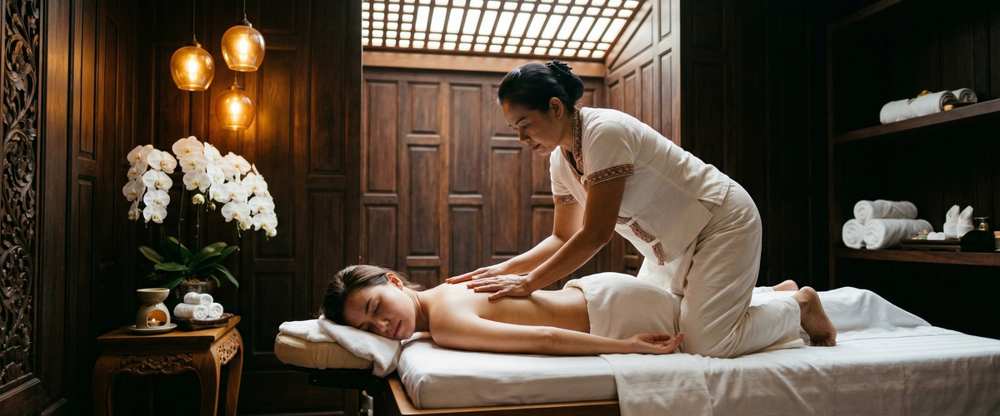

If you're dealing with sciatica, you already know how relentless it can be.

That sharp, shooting pain travelling from your lower back through your buttock and down your leg can make sitting at a desk, walking to work, or even getting out of bed feel like an ordeal. Sciatica massage therapy is one of the most effective non-invasive ways to manage this pain. It's something Glasgow Thai Massage delivers with genuine skill and experience.
Sciatica is pain that travels along the sciatic nerve from the lower back into the leg. It affects roughly 40% of people at some point in their lives.
The sciatic nerve is the longest nerve in the body. It runs from the lower spine through the buttock, down the back of the leg, and into the foot. When it gets compressed or irritated, the result is often sharp pain, burning, or numbness along that path.
The most common cause is a herniated or slipped disc pressing on the nerve root. NHS guidance on sciatica also lists spinal stenosis, spondylolisthesis, and piriformis syndrome as common triggers.
Symptoms usually affect one side of the body. They can worsen with prolonged sitting, sneezing, or coughing.
Tight muscles around the sciatic nerve are a major driver of sciatica pain. When muscles in the lower back, glutes, and piriformis become tense and knotted, they put more pressure on the nerve.
Massage works directly on this problem. It releases those muscles, reduces compression, and lets the nerve settle.
A case study published on PubMed found that massage cut lower back pain and improved range of motion in a client with sciatica. Deep tissue and sports massage are well suited to sciatica. They work beyond the surface layers of muscle to release the deeper tissue and fascia that can trap the nerve.
Traditional Thai massage adds targeted acupressure and assisted stretching along the body's sen energy lines. This can decompress the lower spine and restore movement in the hips and legs.
You can book your session online if sciatica has been limiting your movement and you're ready to address it properly rather than simply manage it.
At Glasgow Thai Massage, a sciatica session starts with a short conversation. We'll ask where your pain sits, how it behaves, and whether it's linked to a known cause such as a disc issue or muscle imbalance.
That shapes the whole session. We're based at Victoria Chambers on West Nile Street in Glasgow city centre. That makes it easy to fit a session into your working week, rather than waiting until the pain becomes hard to ignore.
Depending on your needs, Maliwan or Jariya may use Thai sports massage for deep-tissue work on the piriformis and lower back. They may also use the full-body approach of traditional Thai massage to tackle hip tightness and spinal tension through assisted stretching.
Sessions are focused and unhurried. The aim is real improvement, not just short-term relief.
Sciatica massage works well for a range of people. Office workers who sit for eight or more hours a day often develop chronic lower back tightness. Drivers spend long hours with their hip flexors compressed.
Warehouse and manual workers repeat the same lifting and twisting movements day after day. Runners and cyclists put constant strain on the piriformis and glutes. And those recovering from a disc injury often want to maintain mobility between physio appointments.
If any of those sound like you, book an appointment with us to get started.
In most cases, massage is safe and helpful for sciatica. That said, deep pressure applied directly over an inflamed nerve can briefly aggravate symptoms if not handled with care.
At Glasgow Thai Massage, your therapist will assess your condition before choosing the right technique and depth. If your sciatica is caused by a severe herniated disc, we will also suggest you see your GP or physiotherapist alongside massage treatment.
Many clients notice less pain and better movement after two to three sessions. This is especially true when tension in the piriformis and lower back is the main cause.
Long-term or disc-related sciatica may need more sessions to get lasting results. Regular sessions spaced one to two weeks apart tend to work better than the odd one-off visit.
Deep tissue massage and sports massage are the most targeted options. They work into the deeper muscle layers around the lower back, glutes, and piriformis — the areas that most often compress the sciatic nerve.
Traditional Thai massage supports this by improving hip mobility and spinal flexibility through assisted stretching. Your therapist at Glasgow Thai Massage will advise on the best approach for your symptoms.
A gentle session during a flare-up can help ease muscle tension and reduce acute pain. The approach should be adapted to avoid putting pressure on the nerve.
Deep or intense work is not suitable during a severe flare. Always let your therapist know if you're in an acute phase so the session can be adjusted.
Mild sciatica often improves within four to six weeks with rest and gentle movement. But without tackling the muscle tightness or posture habits that caused it, it often comes back.
Massage therapy, combined with stretching and advice from your GP or physio, supports recovery and helps reduce the chance of it returning.
Yes. Glasgow Thai Massage is at Victoria Chambers, 142 West Nile Street, Glasgow G1 2RQ. It's a short walk from Buchanan Street subway station and easy to reach from offices across the city centre.
You can book your sciatica massage session online and pick a time that suits you.